Iteratively evaluating users' experience to inform platform changes and
a redesign
Partiful is an app for creating aesthetic event pages, RSVPing, and
sending updates via text blast. While the platform is successful with
pre-event engagement, the post-event experience is underutilized. I worked
with William Tolmie, Havi Nguyen, and Ryan Kim in Spring 2025 to
redesign a multi-screen iOS photo-sharing feature that deepens user
connection by making memories from IRL events feel communal and
lasting—without forcing awkward or public sharing.
👥 Target Users
18–30 year-olds who take and share photos at social events. Guests of
these events want to share their photos and hosts want a streamlined
method of collecting said photos.
💡 User Pain Points (identified through reserach and informal interviews)
Social friction: Guests are hesitant to share photos if
they are not familiar with everyone who attended the event.
Validation: There is little reward for uploading photos.
Discoverability: Users often overlook the photo upload
option.
We then sketched different flows to explore solutions to each of these
unique challenges. This allowed us to explore alternate layouts and
navigation for the photos experience.
Our sketches tackled:
-Albums with different themes based on party
-A home screen with a “My Albums” section
-Incorporating social media elements like hearts, comments, and shares
-A new album layout
-Snapchat-style geofilters
-A dedicated tab for albums
Our sketches have been organized by topic and can be seen in the
carousel below.
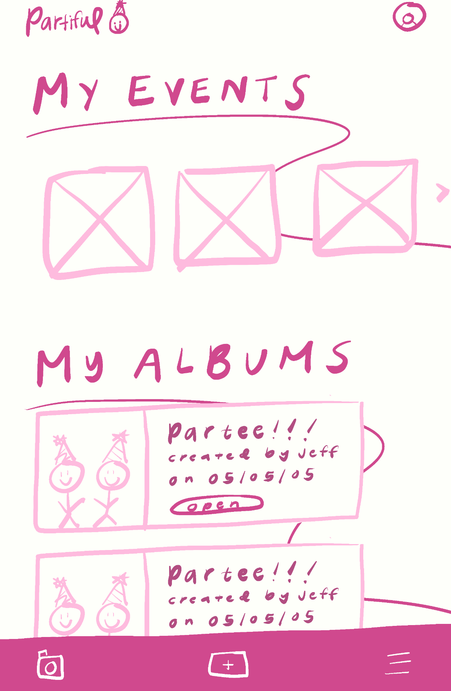
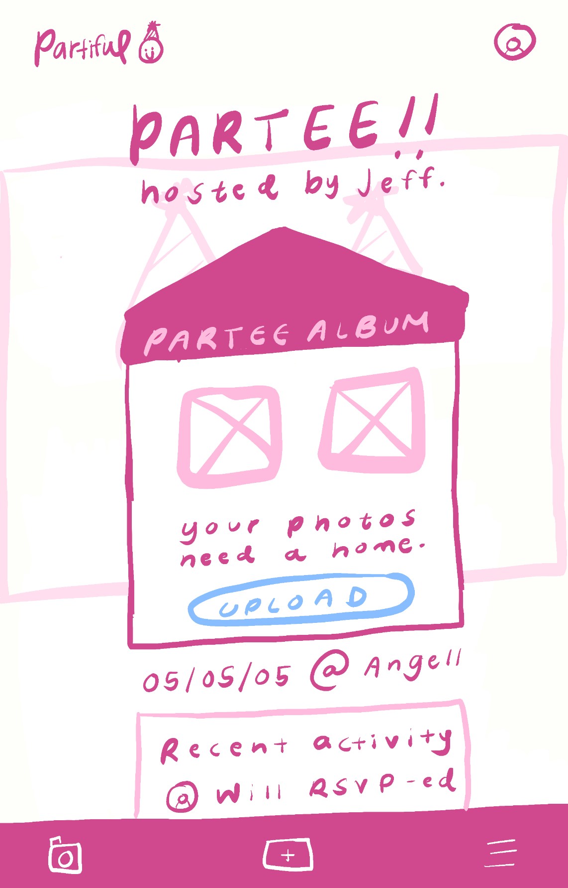
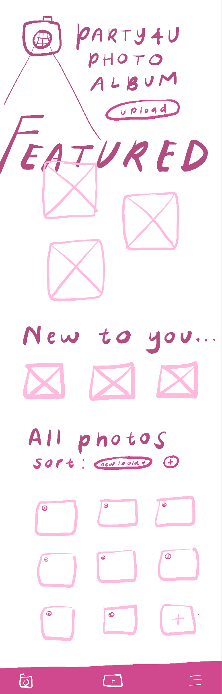
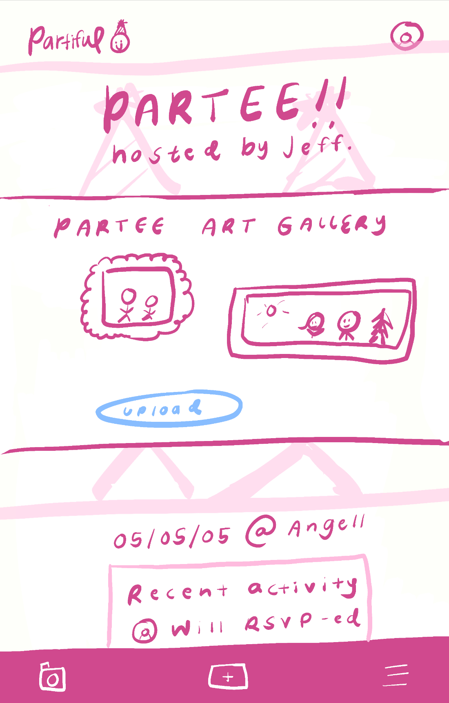
PHOTO ALBUM
📂 Organized Access
-Clear list of all event albums with host, date, and preview
-One-tap entry to view or upload
-"Add photos" button added to sticky bar
-Photo albums tab can be ordered by event
🎨 Smart Layouts
Sortable (newest, popular) + pinned highlights by hosts
Personalizable themes (art gallery, house party, etc.) – see
screens 2 & 4
"Featured" & "New to You" sections to spotlight photos
Condensed event screen (albums prioritized at top of scroll)
💡 Engagement Boosters
Live activity updates ("@Will uploaded!") to spark sharing
Event date/location tags for nostalgia
Why It Works:
For Guests:
Effortless Sharing: One-tap uploads and automatic sorting remove
friction—no digging through menus or manual organizing.
Instant Reward: Seeing their photos featured (with clear credit)
makes sharing feel worthwhile.
FOMO-Driven: Live activity updates ("@Jess just uploaded!") create
friendly pressure to contribute.
For Hosts:
Curated, Not Chaotic: Pinned highlights and themes (like art
gallery or house party) let hosts shape the album's vibe without
micromanaging.
Event-specific albums (*art gallery/house party styles*) make
photos feel valuable, not disposable
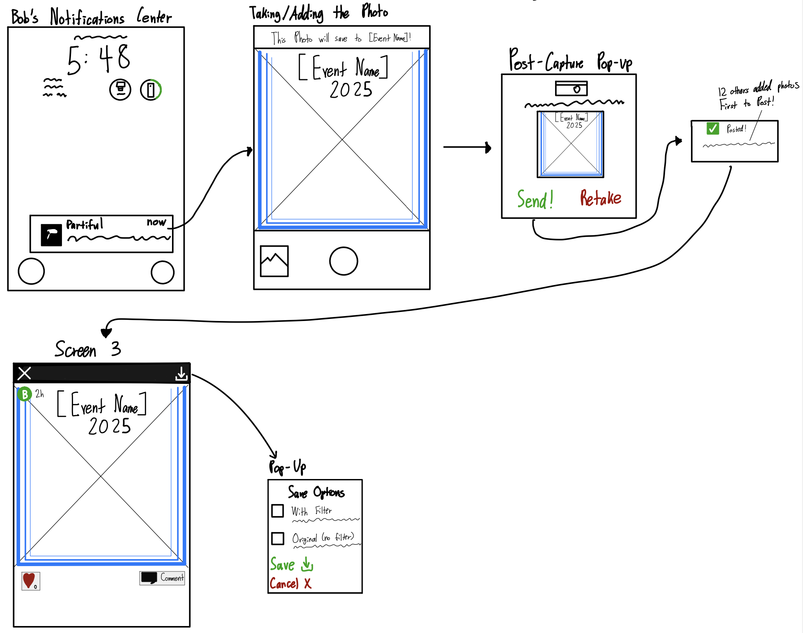
GEOFILTER
Smart Notification
-Guests near the event get a push: "📸 You're at [Event]! Tap to
add photos."
-Clicking it opens the app's camera with the event's geofilter
pre-loaded.
Flexible Capture
-Live Camera: Snap pics instantly with the event's filter (e.g.,
"Rob's Birthday 2025")
-Photo Library: Pick existing photos to apply the filter
retroactively
Save & Share Options
-Save with or without the filter (for authenticity or fun)
-Auto-upload to the event album or manual review
Why It Works
Guests:
Feels playful, not pushy—filter designs spark creativity.
Hosts:
More candid, on-theme photos without begging.
App:
Leverages FOMO + location to boost engagement.
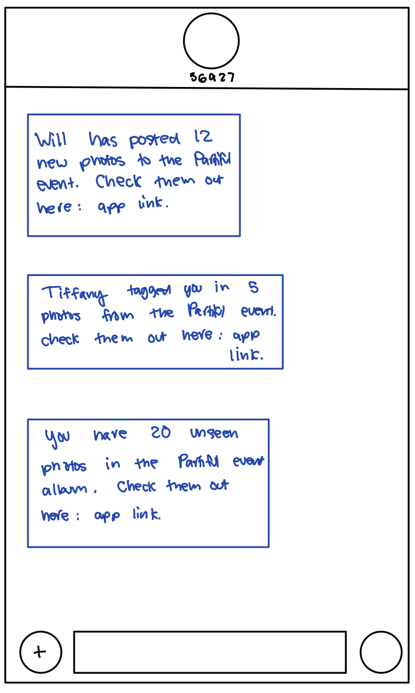
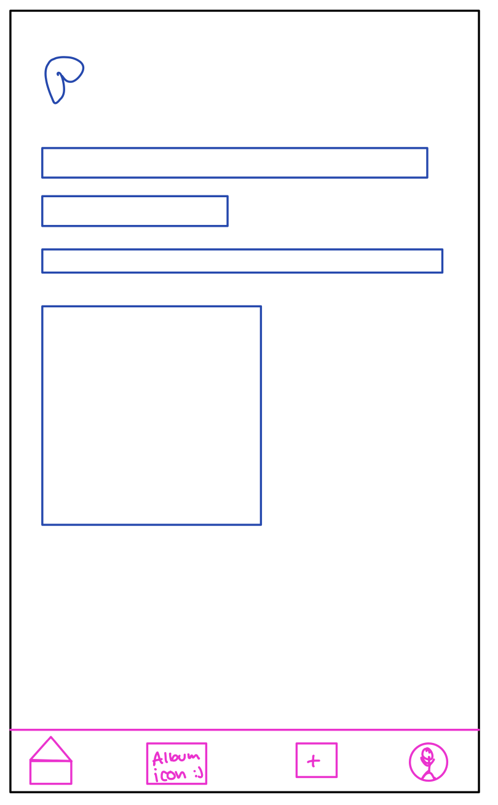
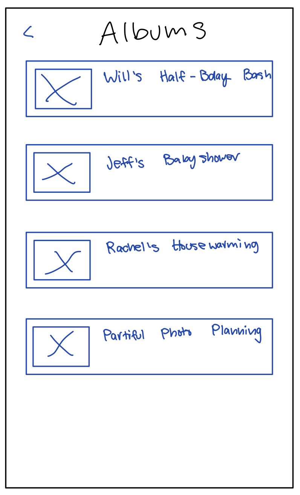
OUT OF EVENT PAGE
Text Blasts
-Alerts for new photos ("Will added 12 prints"), tags ("Tiffany
tagged you"), and unseen content ("20 new prints")
-Sends via *app + SMS* with deep links
Dedicated Albums Tab
-Central hub with all events ("Will's Half-Bday, "Jeff's Baby
Shower")
- + icon for quick adding to albums
Why It Works
FOMO Engine: Notifications use social proof (tags, counts) to
drive engagement.
Zero Friction: Dedicated tab + SMS links make albums unmissable.
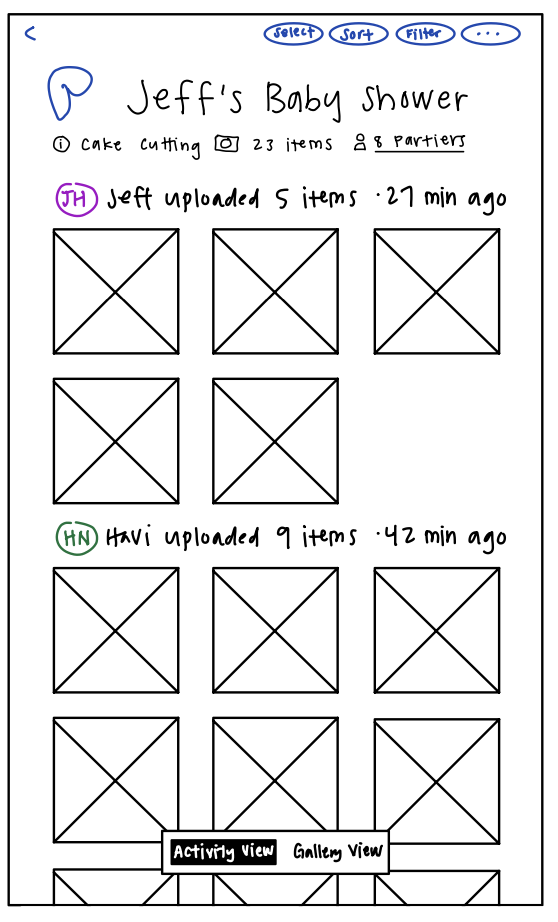
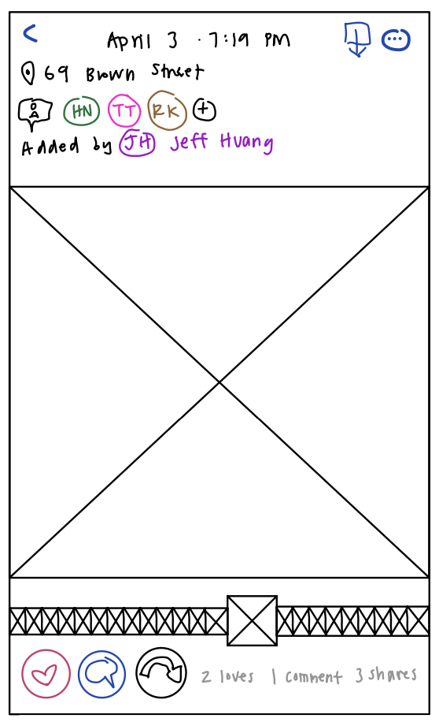
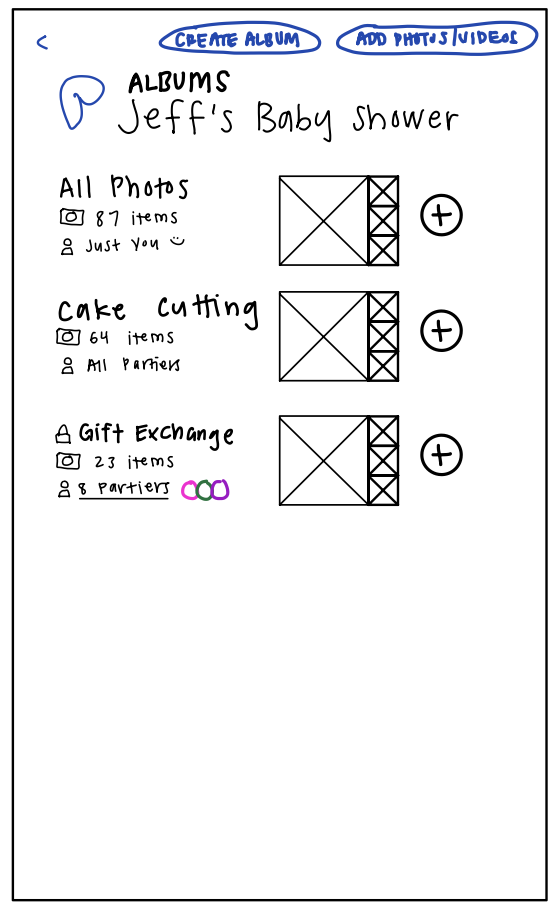
POST SHARING EXPERIENCE
Social Interactions
-Likes, comments, and sharing on each photo ("Loves | Comment")
-Tagging users in photos
-Option to add photos to personal-only albums or shared spaces
-Photo additions excluded from activity feed
Smart Sorting & Filtering
-Sort by poster, time, or activity
-Filter by: album sections or visibility
Activity Feed
-Chronological updates ("havi updated 9 items • 42 min ago")
Rewards Participation: Public recognition (likes/tags) encourages
more sharing.
Flexible Privacy: "Just You" albums reduce social pressure for
hesitant users.
Contextual Browsing: Sorting by event moments (cake cutting) or
people (Jeff/Havi) mirrors real-world memory recall.
FOMO-Friendly: Live timestamps ("27 min ago") + upload alerts keep
engagement fresh.
Merging Ideas
We held a collaborative review of our sketches and noted patterns across
designs, such as the need for visibility, validation, and navigation
simplicity. Instead of treating each sketch as separate, we combined the
strongest elements from each.
Add Photos
- We kept the persistent upload button on the Events page to reduce
discoverability friction.
"My Albums" Tab
- This tab supports photo visibility outside the event scroll, giving
users an easy way to revisit and sort photo albums across all events.
Tagging + Social Interactions
- We carried forward ideas like tagging, hearts, and comments to add
validation for users.
- These live under each image, enabling engagement post-upload/post-event
without the pressure of a public feed.
Event-Specific Photo Upload
- Our sketch of a camera UI that saves to a specific event.
- This screen also integrates playful design (e.g., geofilters).
Reflection
- Designing this feature list helped us think more holistically about how
users engage with memories—before, during, and after events.
- We prioritized intuitive UI and low-friction interactions while staying
mindful of emotional drivers like nostalgia, validation, and community.
- Through sketches and feedback loops, we learned how even small decisions
(like tab placement or icon affordances) can significantly influence user
behavior.
Wireframes
From our sketches, we created low-fidelity wireframes, which can be seen
below, to visualize the flow of our app.
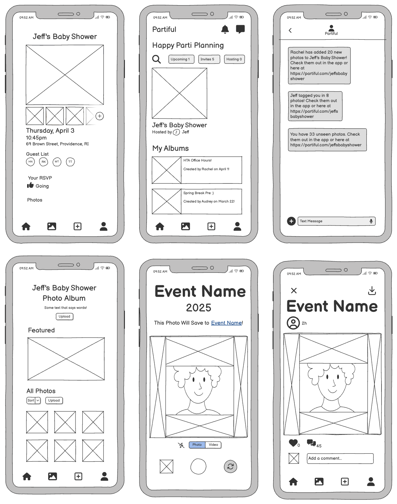
We received feedback for our initial wireframes from Grace, a design
engineer at Partiful, and Michael, a Teaching Assistant for CSCI 1300.
Below we detail their feedback along with the ways we incorporated it into
our hi-fi prototype.
Grace "liked" the sticky bar with the slideshow of photos near the top
of the event page.
We maintained the sticky bar slideshow in our final design.
Grace said it "would be nice to show up to X photos [in the sticky bar
slideshow] and gate everything else" for after partiers RSVP 'yes' to an
event.
We added an RSVP-based privacy feature to Partiful photos.
Michael said the original “plus button icon” for the slideshow was
confusing because it makes him think he will be seeing more photos, not
adding new ones.
We changed the icon to be more descriptive (Photo Album with a plus sign)
and its location (before the slideshow) to be less confusing.
Grace said the "add entry point" for the sticky bar slideshow "feels a
little awkward" and noted theat the "space on h-scrolls is traditionally
occupied by a > scroll button". She recommended that we "have a CTA at
the very end of the h-scroll" so that partiers are able to see all
content in the slideshow.
We removed the add entry point at the end of the slideshow per Grace's
recommendations. We did not include a CTA button as it made the section
very cluttered when we prototyped it. Instead, a slider under the photos
should appear when the slideshow is populated with more photos.
Grace noticed our introduction of an 'Albums' interface and concept and
asked questions about whether "each event [was] an album" and "an album
need[s] to be created or is something automatically an album" if it is
attached to an event.
We clarified the role of albums as collections of photos that are attached
to events. Users can create an album for a specific purpose, but all
photos added to an event will land in a catch-all "All Photos" album as
well.
Michael commented on making sure to keep spacing and proportion
continuity from the app into our Hi-Fi Prototype as it seemed we
deviated slightly with our Wireframes.
We made sure to use the Figma templates provided and keep the original
Auto layouts.
Grace said the "upload button can be sticky/fixed" on an album page here
since it is "such an important button" and that only one upload button
"is needed" on the album page.
We removed the additional upload button and made it sticky.
Grace "liked" our geofilters idea, calling it "very smart"
We implemented the geofilters idea in our final product.
Grace said the "entry point" for the individual photo viewing screen is
"a little unclear" and called the event name "too promiment".
Using Figma Workflows, we clarified the entry point(s) for the individual
photo viewing screen and made the event name less prominent.
Michael made the suggestion of cleaning up the photo taking page to make
it less cluttered and more intuitive.
We removed both the download button from the main page and the photo
uploader.
Hi-Fi Prototype
Moving forward, we used Figma to build an interactive prototype with
linked screens and interactions. Key flows include the pre-RSVP view,
uploading to an album, and geofilters for photos. We leaned into fun,
feedback-rich interactions and subtle nudges, rather than heavy social
pressure.
You can view the prototype
here.
Feel free to enter prototype mode as either a Host or Guest to experience
our mockups. We also recorded a
loom
that demonstrates the various prototypes. For more details about our
mockups, please note the Design Choices on the Figma file.
Final Reflections
We presented our final Hi-Fi Prototype to Grace who really enjoyed seeing
our progress and the changes we made. Grace specifically appreciated how
our approach was more “grounded” rather than being too “gimmicky.”
Unfortunately, we learned that the Photos project is on pause and she was
unsure if our suggestions fit into the roadmap.
If we had more time with the Hi-Fi Prototype: we would have loved to
include more interactions to feed into the social media aspect of
Partiful. It would have also been very helpful to explore different edge
cases, like wanting to make certain photos visible before RSVP-ing or when
there are only a few photos uploaded. Overall, we are really with the
progress we made during this project and are excited to see how Partiful
moves forward with their Photos feature.